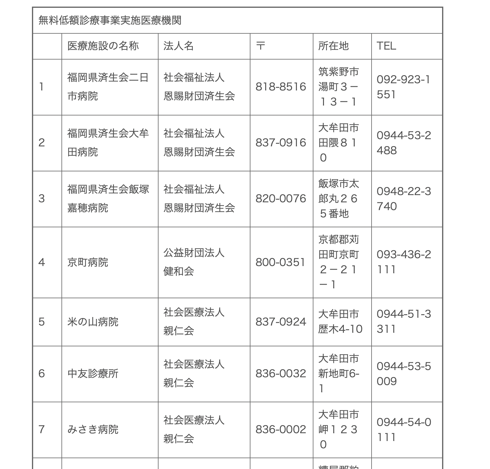
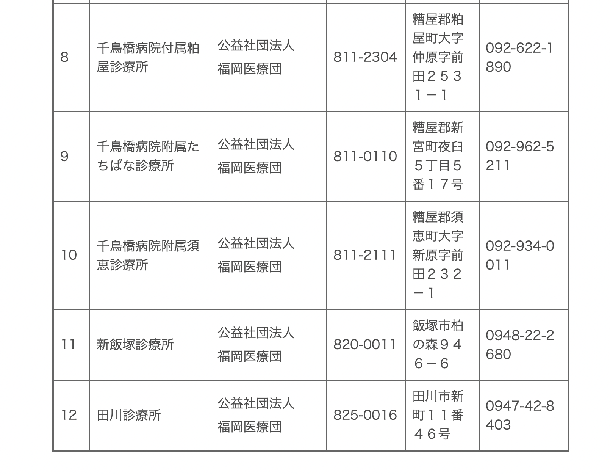
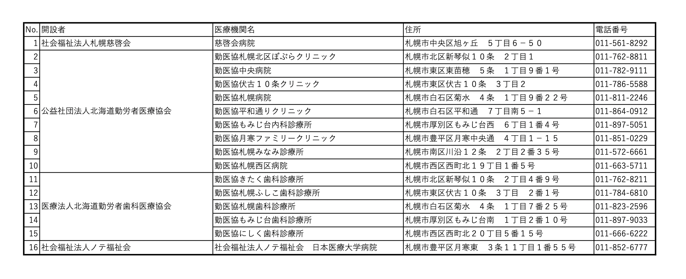

第10回課題
質問
アルバイトを複数しながら生活している25歳の男性です。
福岡と札幌で「無料低額診療」を実施している医療機関を知っておきたいのですが。
こうした福祉制度の背景も勉強していきたいのですが関連の書籍を教えてください。
キーワード
・無料低額診療
・福祉制度
・福岡
・札幌
情報資源
＜無料低額診療とは？＞
①無料低額診療事業について─厚生労働省
②社会福祉法(◆昭和26年03月29日法律第45号)─厚生労働省
＜無料低額診療〜福岡〜＞
③無料低額診療事業について─福岡県
④無料低額診療事業について─福岡市
⑤無料低額診療事業を実施する医療機関について─北九州市
＜無料低額診療〜札幌〜＞
⑥無料低額診療事業について─札幌市
＜無料低額診療に関する本＞
⑦無料低額診療事業のすべて役割・実践・実務─クリエイツかもがわ
⑧いのちをつなぐ無料低額診療事業─クリエイツかもがわ
回答・調査プロセス
「無料低額診療」やレファレンスで指定された各地域の無料低額診療をネットで検索しました。
回答欄に載せた各地域の無料低額診療機関は、全て自治体ホームページのものです。
回答
＜無料低額診療とは？＞
無料低額診療事業は、社会福祉法第2条第3項第9号（※）の規定に基づき、生計困難者が、経済的な理由によって必要な医療を受ける機会を制限されることのないよう、無料又は低額な料金で診療を行う事業のことです。
これは、第二種社会福祉制度事業であり、固定資産税・不動産取得税の非課税等の税制上の優遇措置があります。
対象者は、低所得者・要保護者・ホームレス・DV被害者等です。（情報資源①）
（※）社会福祉法第2条第3項第9号とは？
「生計困難者のために、無料又は低額な料金で診療を行う事業」のこと。（情報資源②）
画像は石川勤労者医療協会
詳しくは
情報資源①
、
情報資源②
を参照して下さい。
＜無料低額診療〜福岡県〜＞
以下は福岡県で無料低額診療をしている医療機関です。（情報資源③）
 
福岡市、北九州市の医療機関はまた別なので、それぞれ
情報資源④
と
情報資源⑤
を参照して下さい。
＜無料低額診療〜札幌市〜＞
以下は札幌市で無料低額診療をしている医療機関です。（情報資源⑥）

＜無料低額診療に関する本＞
情報資源⑦
と
情報資源⑧
では無料低額診療に関する本をピックアップしました。
参考にしてみてください。
余談
大伯母が北九州市に住んでいます。
北九州市は高齢者サービスや福祉が充実しており、90歳に近い大伯母も安心して1人暮らしできていると聞きます。
福祉制度が整っている地域は本当に住みやすいと思います。

 画像は石川勤労者医療協会
画像は石川勤労者医療協会